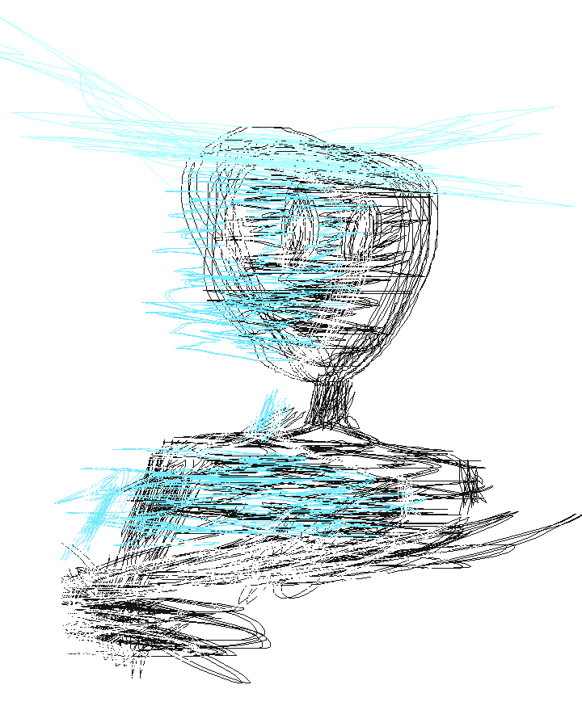

They told me "your entire body is fried, I don't expect anything from you" and I don't know how to take it, it's more than just my body anyway. Everything that I comprise of—my body, my mind, my soul—feels corrupted, no matter how hard I try I end up right where I started. $15,000 from 2 days of work at least, but my mind keeps me locked in the same place, I feel like a prisoner in my own body. I feel disconnected, like I'm fundamentally different in a way, a quiet hum in the background, only ever suppressed by distraction. Lipps Inc. on full volume, can you hear screams slip through the cracks? I can never find my words even when I want to say something so all I'll do is update the devil encounters on this shitty little internet corner because I have nothing more to tell you.
There is something very wrong and it's way deeper than I could have ever imagined. If meaning is all it was, I've been able to delude myself into subjective meaning multiple times, it never lasts. It feels like there's something so much deeper, I don't know what it could be, there's simply no way I have to suffer like this if there's nothing special about me. I'm sick of pretending it's any less than what it truly is. I feel fucking haunted. I am haunted, it's not just a feeling. It wasn't always this way, I have no idea what led to it, demons are fucking real, you look at me like I'm crazy whenever I say this. I remember going to the gym on no sleep after holding the hand of some fucking entity, tell me I'm crazy I know what I experience, I barely believe any of this is real, what does it matter if you do believe me? If any of this is real, if you're real, then so is this experience. Demons hate me, so does your false God that you worship, he won't save me, stop telling me she will. I'm in a constant shift where I drift through dimensions I don't notice. This is not the reality I was born into, you aren't the same people, I hate the care I feel for you people, you aren't who my mind likes to pretend you are. I haven't seen you in too many years for me to feel comfortable. Every day it's new people, all wearing the same mask.
You're probably a demon too, I don't know what to do about any of this. This isn't real in the sense you all tell me it is and I feel so helpless when everyone pretends it's the same thing; and even when you agree, if you're nothing, what does your word mean? I'm stuck in a bubble giving me a barrier between me and the evil, but the evil disguises itself as love so fucking well. Deep down I know it's evil, but sometimes I wish the bubble wasn't there, so I could really see if the love they present is my solution. The bubble will pop regardless, it will all get worse. I used to be scared of aliens, never realising the real monsters were the closest to me, the same ones who told me monsters weren't real, downplayed what I swore I saw that day, you were the monster with human skin. I wasn't crazy as a kid, I remember it clear as day, I've never thought of it until now though, is that where it all started? You laugh when I told you what I saw the other day, you'd call a psych ward if I told you anything more than what I already have.
But I can't keep pretending none of this ever happened any longer, I saw aliens consistently for at least half a year when I was around 5—probably demons, I used to think they were aliens—I was always told I was imagining things, it felt way too real to be nothing more than that. I'd felt my body morph once, I don't know how to explain it without sounding any more insane than I already do, people always ask me why I believe in the paranormal, I don't need any evidence beyond my own experience. It was like my body shrunk, but didn't, like my mass shrunk into one point, but I was still complete, still me, my perception warped, like I could see myself change shape and fall back into another reality. Incidents like this persisted for what felt like forever, if I look back then like I said, realistically, it was likely around half a year. That doesn't change how surreal it all felt. Infiltrated my dreams too, I had no escape from that, I barely saw any entities manifest in the material world, aside from once, they only revealed themselves in dreams.
I think the girl who cared for me when I was so young was possessed. Witchcraft is real. Demons are real. She was a couple years older than me, I could never pronounce her name, I forget where she was from, family used to laugh when I could never get it right. She was great, I don't remember her face anymore, I'm not even sure if her name is what I remember it to be. For the year or two she was there with me, I never saw here in the slightest negative light. She'd always come over after school and play with the toy cars I had with me, I don't remember much else aside from that just like everything else, maybe I'd remember her face if I didn't get persistent night terrors demonising her in the coming years, which I'd chalk up to the creativity of a child's mind if it wasn't for the times it manifested into reality. Maybe she was the start of goodness in my life being tainted completely, any good that comes to me gets consumed by black smoke soon after. Maybe I was cursed as a child. I don't know what I've done to deserve this path. That girl moved from my area after a year or so of being there with me, that's when it all started.
I'll never have the words to properly explain what it became, it really feels like a demon manifested with the same feeling of presence she gave, except, dark. All light must disperse, leaving the same darkness we once started with. Does darkness win, or does the light become too faint? Why does the puppeteer choose to strip me of everything that brings me solace? Nobody else sees the strings of the cruel puppet show. I thought she'd died for a little while, I can't grasp anything that happened. I saw my body warp, I caught demons in the corner of my eye, I had to tell my cousin to let me sit against the wall when we was sitting on the floor playing games because I always felt a demonic presence behind me. I remember drawing the demon I saw, I remember it as sometimes blue, sometimes black, it had something above its head, I don't really remember what. It usually appeared human, but it's as if the human disguise slipped sometimes, revealing what it was. I don't recall ever seeing it's full body, but something gave me the impression it was freakishly tall. I'm going off of words that come to mind when I think of it, I do not have a vivid memory of what I saw, nor do I remember exactly what I drew back then. I don't have anything more to say, I can't find my words, I need to smoke, I'm way too stressed, here's a stupid drawing of what I remember it as. My memory is fried.
